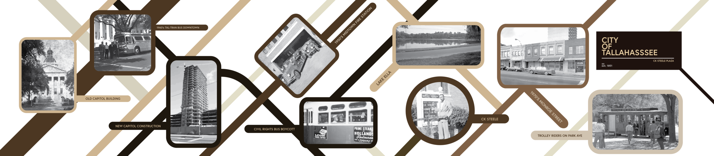
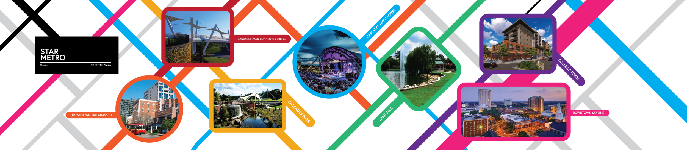
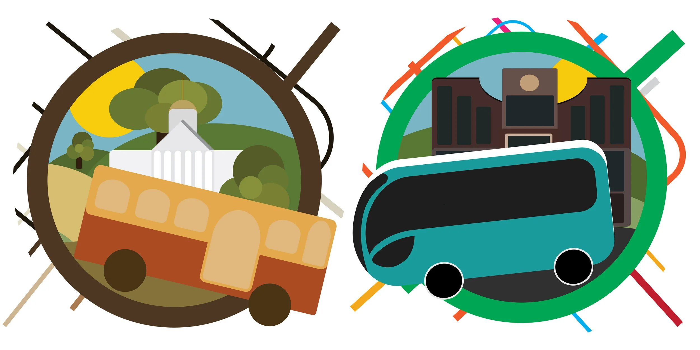
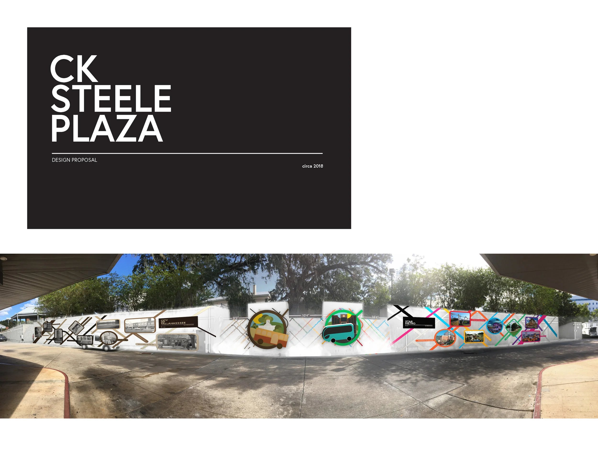
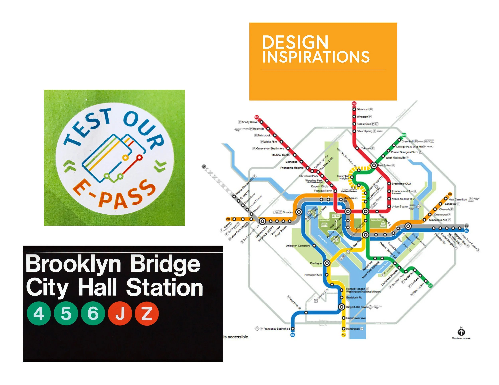
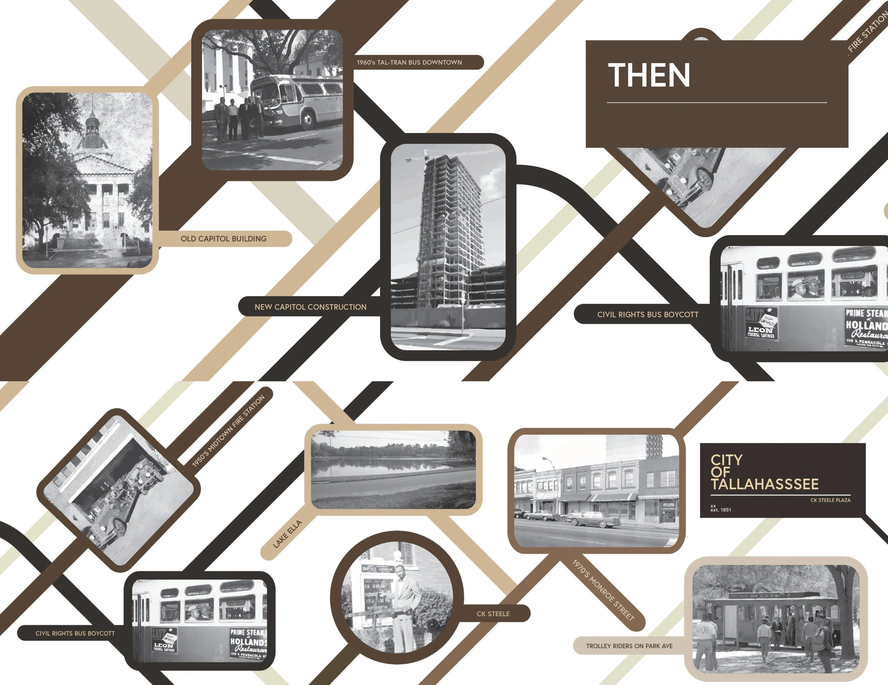
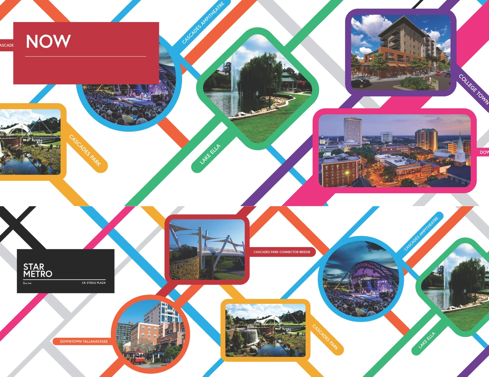
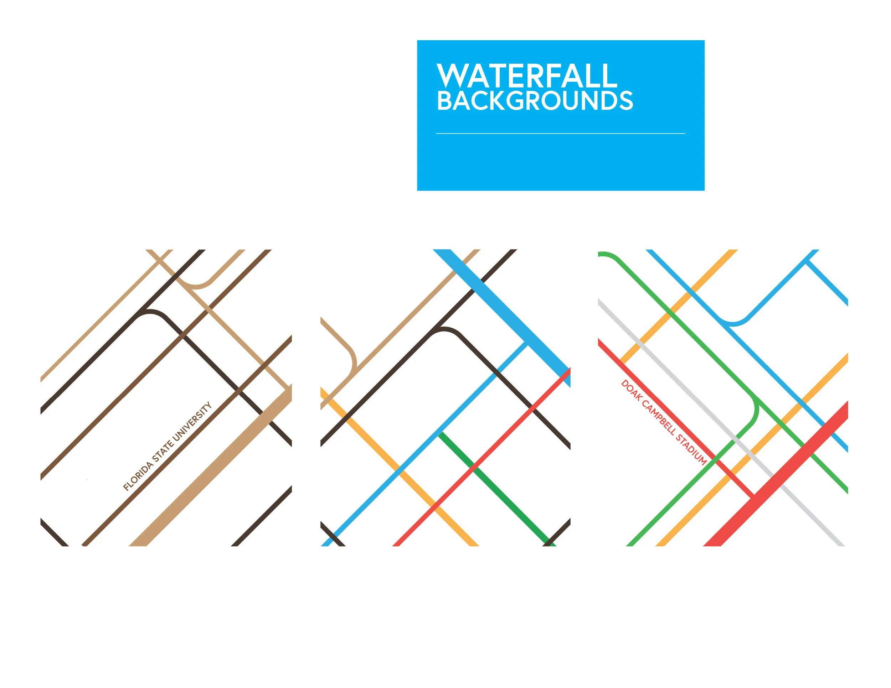

The plaza is Tallahassee's central transit hub — the brief was to design a mural that a rider actually waiting for a bus would read, not just glance past. The concept pairs a "past" and "now" illustration of the same route, then unpacks it across a run of transit-shelter panels.
Then & now
Two roundels, same composition, one generation apart — a horse-and-trolley-era capitol scene opposite a modern StarMetro coach. Shown here as the matched pair they actually are, rather than as two separate grid tiles.



The panel set
Five additional panels extend the story across the shelter run — each kept at its own natural proportions rather than cropped to a shared grid, since the physical panels themselves aren't uniform either.




